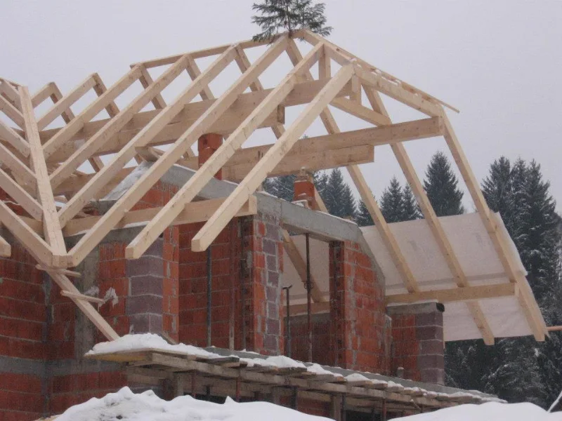

01
Tesarstvo
- lesene strešne konstrukcije
- leseni nadstreški za avtomobile in terase
- brunarice, vrtne ute in vrtni paviljoni
- raznovrstni izdelki iz masivnega lesa
Smrekov les, predhodno zaščiten z impregnacijskimi sredstvi proti insektom in glivam. Po želji dekorativna zaščita z lazurnimi premazi.
- izdelava in montaža
- svetovanje v vseh fazah izvedbe
- delo v dogovorjenih rokih
